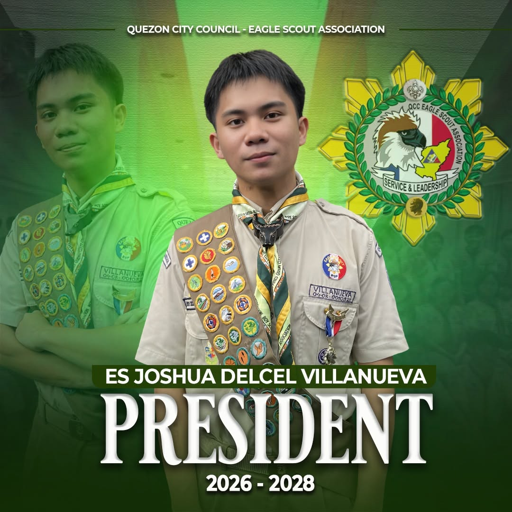
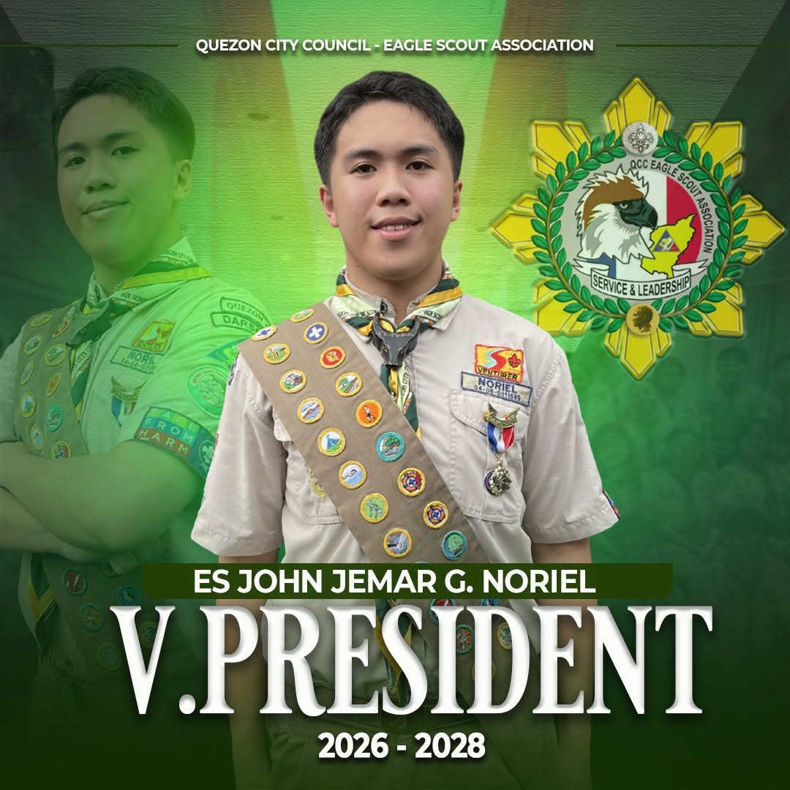
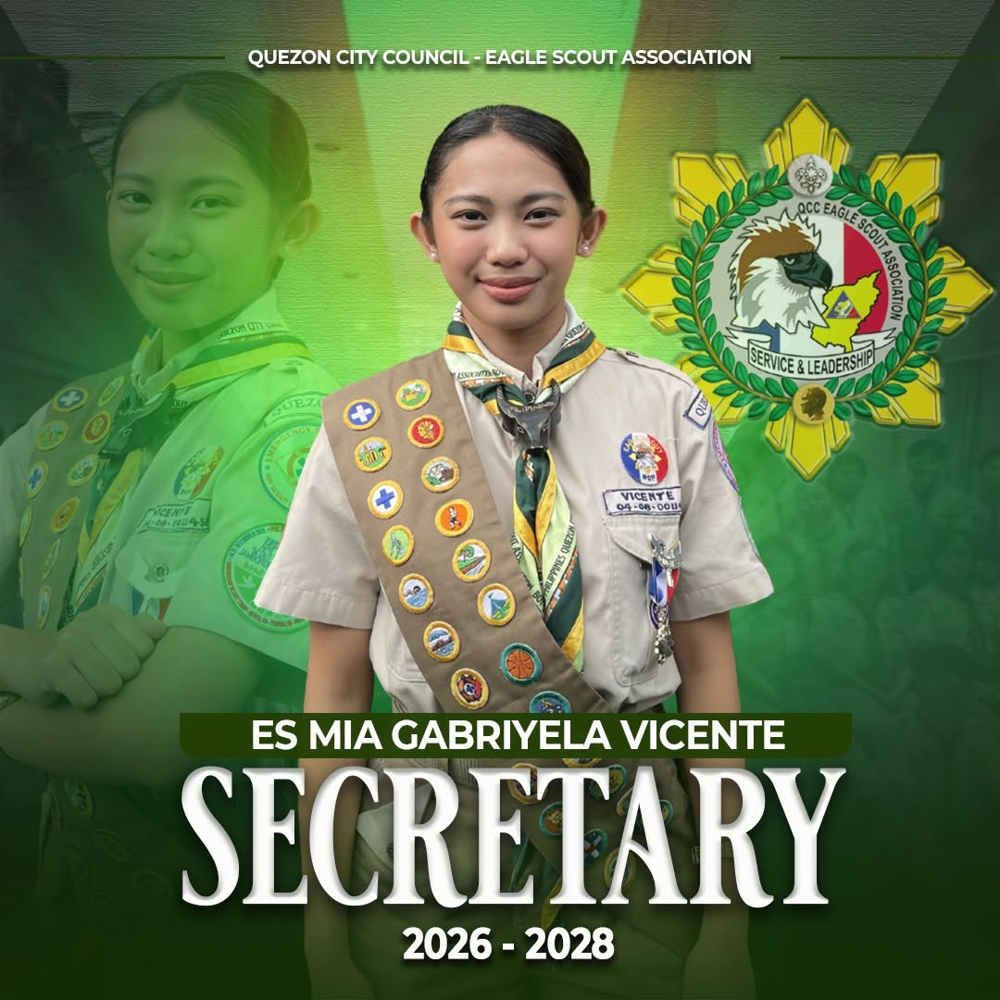
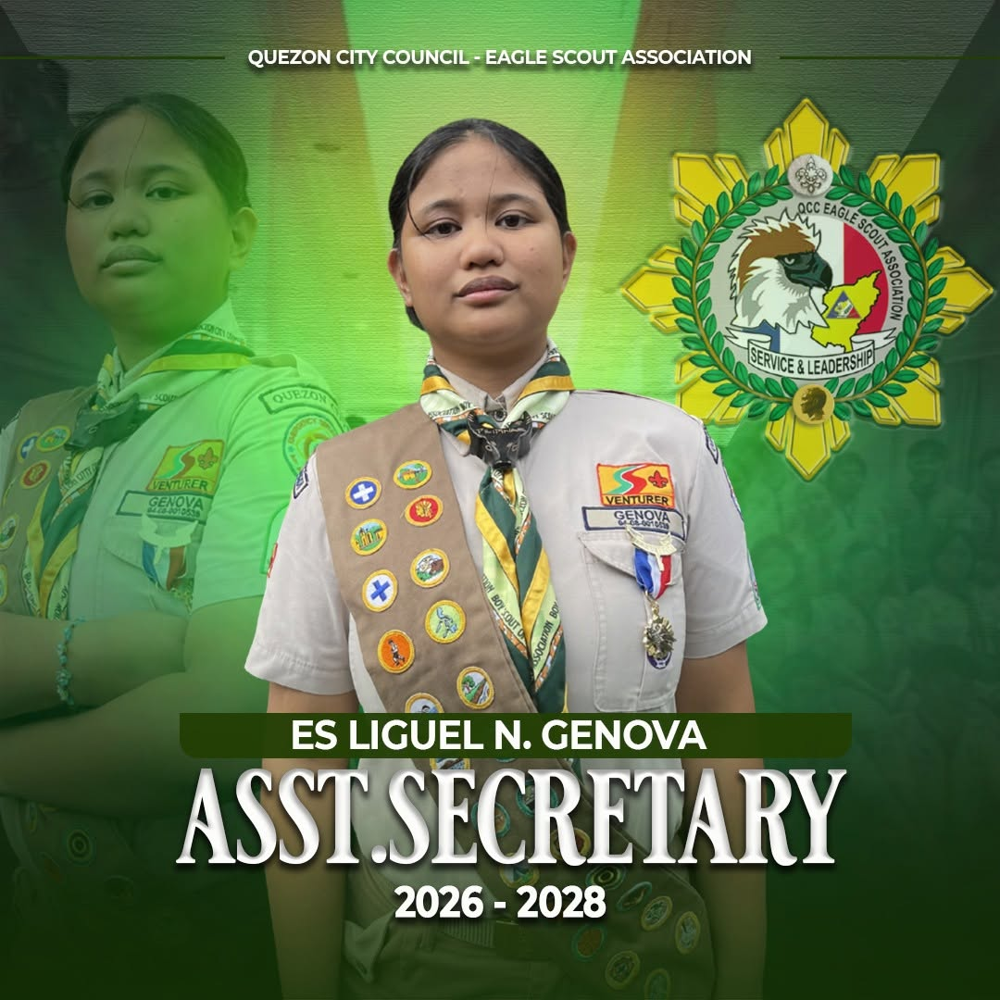
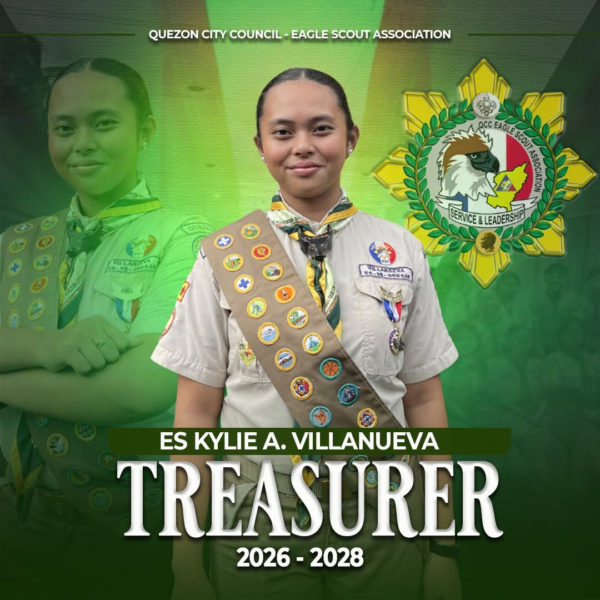
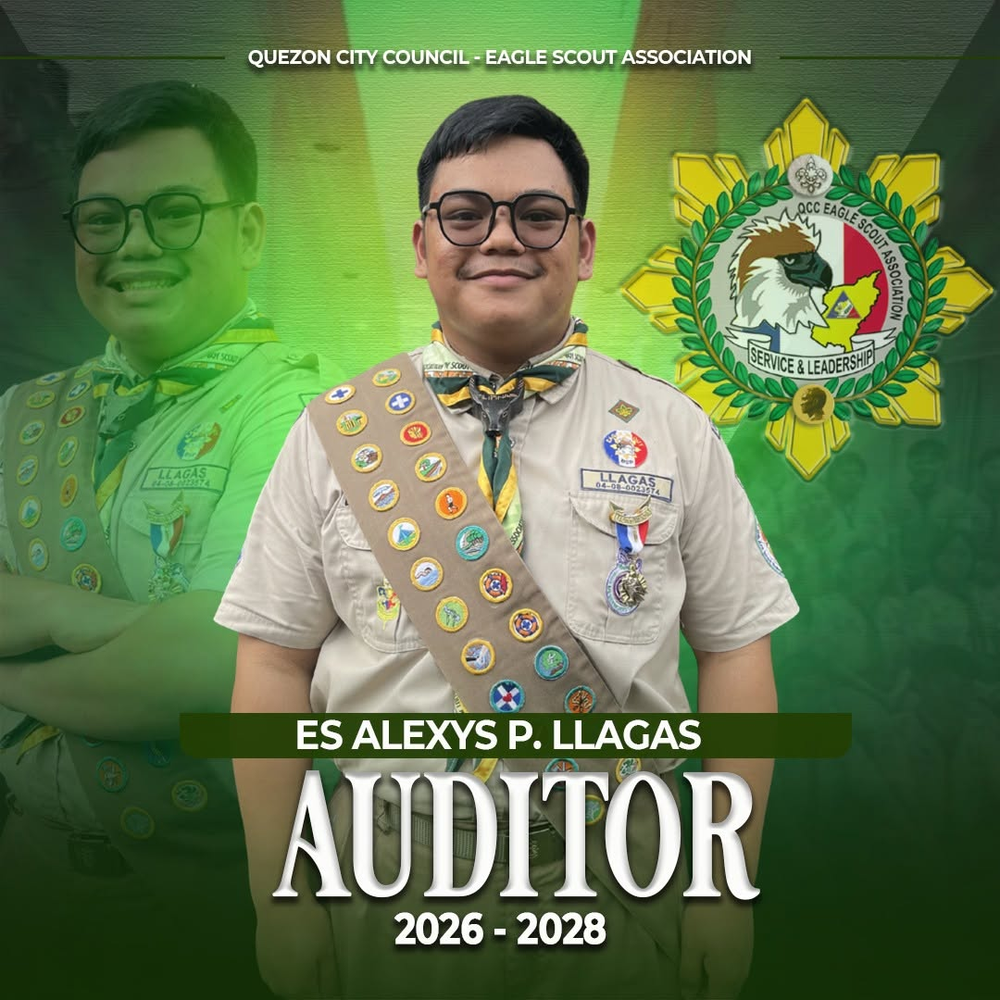
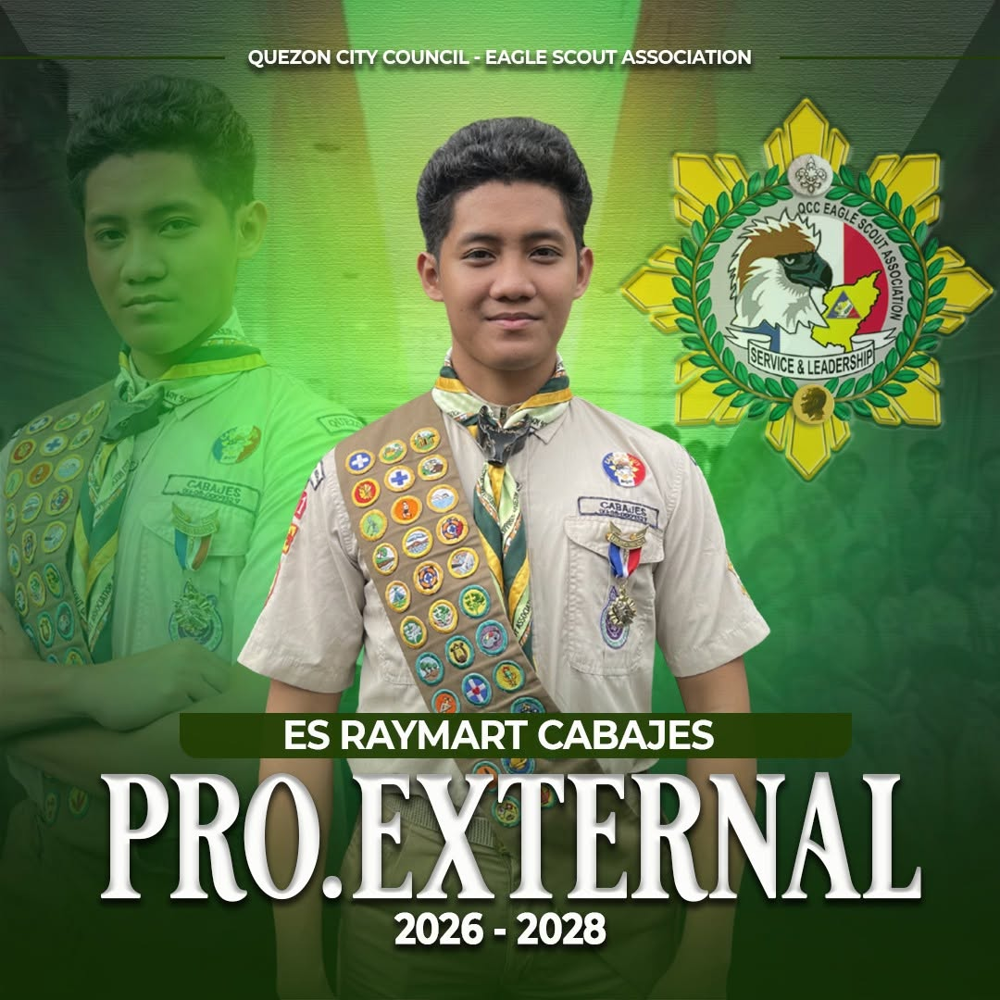
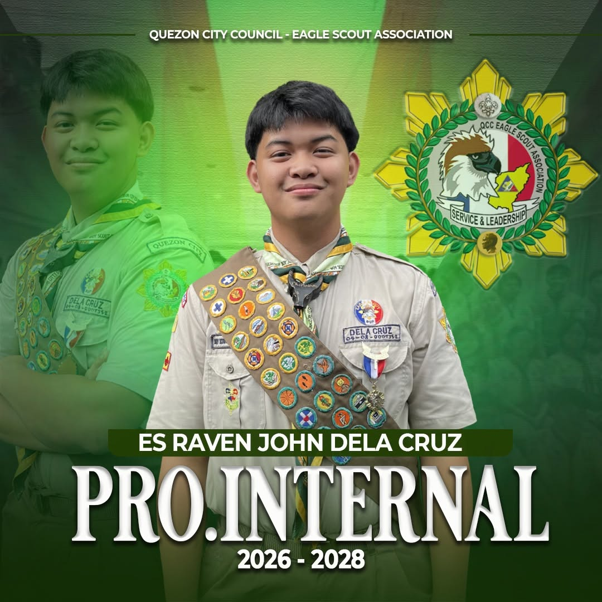

President
ES. Joshua Delcel A. Villanueva
Leads the association and provides overall direction in achieving its mission, programs, and objectives.
Meet the officers of the Quezon City Council Eagle Scout Association, dedicated to fostering leadership, service, and fellowship among Eagle Scouts.

Leads the association and provides overall direction in achieving its mission, programs, and objectives.

Assists the President and oversees programs, activities, and organizational initiatives.

Manages official records, documentation, correspondence, and organizational communications.

Assists the Secretary in managing official records, documentation, correspondence, and organizational communications.

Oversees the financial affairs and resources of the association.

Reviews financial records and promotes transparency and accountability.

Handles the association's external communications, media relations, and public-facing announcements.

Handles internal communications, member updates, and coordination within the association.
The officers of QCC-ESA serve not only as administrators of the association but also as role models for fellow Eagle Scouts and the next generation of youth leaders.
Through service, fellowship, and responsible leadership, the association continues to strengthen the Scouting community across Quezon City.